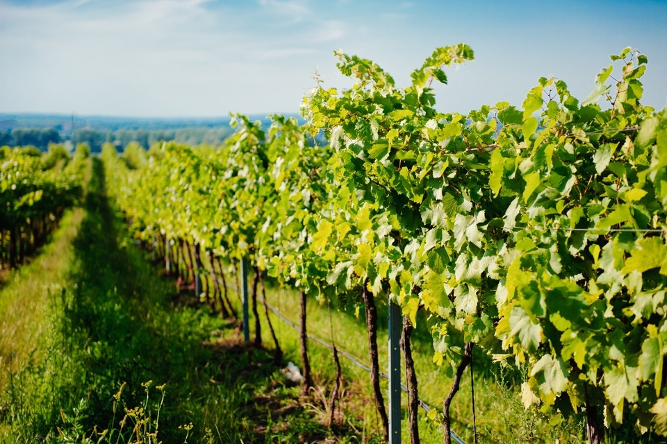

O pagina despre vinuri
O pagina despre vinuri 1)Dealurile Moldovei
În vestul ?arii, se întinde cea mai mare regiune viticola din România, pe aproape 70.000 de hectare. În zona de podi? se afla 12 podgorii (Cotnari, Odobe?ti, Panciu, Covurlui, Cote?ti, Hu?i, Ia?i, Nicore?ti, Colinele Tutovei, Ive?ti, Zeletin, Dealul Bujorului), plus alte 8 centre viticole independente. Fiind vorba de cea mai mare zona viticola din ?ara, sunt diferen?e notabile între climatul din partea de nord si partea de sud a acesteia. Vizite ?i degustari se pot face la crama Gârboiu (Cote?ti, jude?ul Vrancea) sau la crama Cotnari, locul unde cea mai mare parte din vinul produs în Podi?ul Moldovei e adus sa îmbatrâneasca. La Cotnari e ?i una dintre cele mai mari vinoteci din Romania, cu peste 1 milion de sticle de vin.
2)Dealurile Olteniei si Munteniei
Podgorii de vin faimoase au fost crescute aici înca de pe vremea dacilor, la Draga?ani sau la Corcova. Zona, întinsa de-a lungul Subcarpa?ilor Meridionali, include opt podgorii: Dealurile Buzaului, Dealu Mare, ?tefane?ti, Sâmbure?ti, Draga?ani, Dealurile Craiovei, Severin ?i Plaiurile Drancei. Multe soiuri interna?ionale cresc bine aici ?i, de asemenea, este o regiune unde se dezvolta bine soiuri române?ti precum Feteasca Neagra, Negru de Draga?ani, Feteasca Regala, Tamâioasa Româneasca, Crâmpo?ie, Muscat Ottonel. Pentru un tur de degustari, î?i po?i programa din timp vizite la crama Bauer, crama Stirbey (ambele la podgoria Draga?ani), cramele S.E.R.V.E. sau crama Avincis (ambele la Dealu Mare).
3)Podi?ul Transilvaniei
Vinurile transilvanene provin de regula din podgoriile Târnave, Alba, Sebe?-Apold, Aiud ?i Lechin?a, care au împreuna 17 centre viticole. Dar tot în regiune se mai gasesc ?i alte centre viticole independente. În podi?ul Transilvaniei se fac mai mult vinuri albe, de la vinuri de masa ieftine ?i simple, pâna la vinuri foarte valoroase. Gra?ie climei, se ob?in chiar vinuri demi-dulci ?i dulci. Vinurile spumante de tip Jidvei sau Alba de aici sunt foarte pre?uite ?i peste hotare. Pentru degustari, po?i vizita Crama Villa Vinea, la 60 de km de Sighi?oara sau Crama Jidvei, ce are o capacitate impresionanta, de peste 270 de mii de hectolitri.

4)Dealurile Banatului
În regiune nu exista podgorii mari, dar sunt ?ase centre independente cunoscute de viticultura. Dealurile Banatului produc nu doar vinuri, ci aici se cultiva ?i soiuri de struguri de masa, cum ar fi cei din grupa Chasselas, Muscat Hamburg sau Muscat de Adda. ?i vinurile ?i strugurii se consuma mai mult pe plan local, iar produc?ia este rareori ?i exportata. Cele mai cunoscute pentru degustarile de vin sunt cramele Reca? (Jude?ul Timi?).
V5)Colinele Dobrogei
Vinurile care sunt produse în clima de podi? din Dobrogea sunt cu totul aparte. Data fiind pozi?ia geografica, în apropierea Marii Negre ?i zonele umede din bal?ile ?i Delta Dunarii, calitatea solului influen?eaza semnificativ specificul viticulturii acestei regiuni. Înca din antichitate aici se faceau vinuri care erau foarte apreciate la export, de catre romani ?i greci. Regiunea cuprinde podgoriile Sarica-Niculi?el, Istria-Babadag ?i Murfatlar. Aligote este unul dintre vinurile specifice regiunii, care se produce în special în zona Macinului (de altfel, foarte potrivit la preparatele cu pe?te specific zonei de Dunare). Vinurile de Murfatlar ?i cele de la Sarica-Niculi?el sunt cunoscute ?i apreciate pe plan interna?ional.